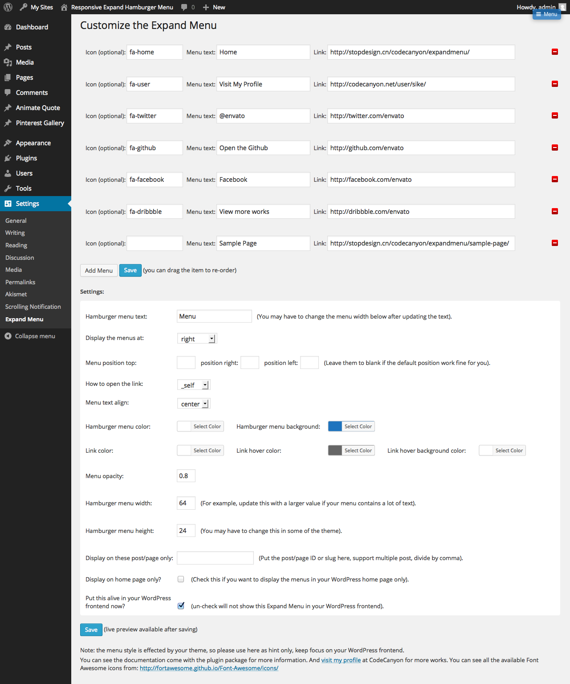

“Responsive Expand Hamburger Menu WordPress Plugin” Documentation by “Sike”
“Responsive Expand Hamburger Menu WordPress Plugin”
Created: May 19 2014
By: Sike
Contact
Thank you for purchasing. And I appreciate if you can rate my item in the download section of codecanyon, thanks!
Table of Contents
A) Installation and Usage - top
How to install.
- Unzip and upload the folder to the /wp-content/plugins/ directory, via FTP, or upload the zip directly via WordPress's built in plugin uploader.
- Activate the plugin through the 'Plugins' menu in WordPress
How to use the plugin.
- After activating it, you can access the plugin via the Expand Menu menu under the Settings main menu:
- How the backend looks like, you can add the icon, menu, choose the color, position, text align etc:
 - If you add or remove text from the Hamburger Menu Text, you may have to change Hamburger menu width to fit your new text at the same time.
- You can see all the available Font Awesome icons from: http://fortawesome.github.io/Font-Awesome/icons/
- The menu can be global or display in certain post(s)/page(s) only. You can put the multiple post/page ID in the Display on these post/page only, for example: if you put 2, 19, 33 in the field, the menu will only display at the post with that ID.
How to get post or page ID? You can get the post or page ID form it's URL. For example, the post ID of the above post is 1. And when you set the panel content from the post/page.
You can get the post or page ID form it's URL. For example, the post ID of the above post is 1. And when you set the panel content from the post/page.
B) The source Folder - top
Contains the source code for this plugin, you can customize or add new function in the php file.
C)Credits - top
jQuery http://jquery.com
inspired by http://codepen.io/scottohara/pen/AoFvD
D)Features: - top
- Unlimited color option, you can choose the menu color with the color picker in the backend.
- CSS3 transition.
- Menu can be displayed globally, home page only or on certain post(s)/page(s) only.
- Optional icon, menu text, background, position, color and link etc.
- Optional to enable it in the frontend.
- Compatible with latest jQuery and latest WordPress.
- Enqueue the js and css only when needed. Keep WordPress page size smaller.
- FAQ and source code are included in the package. Free update in the future.